الرئيسية المعرض توثيق التنوع البيولوجي في الإمارات معرض تصوير الماكروحشرات وعناكب ونحل وفراشات مصوّرة في دولة الإمارات. كل صورة موسومة كما تُوسم العيّنات: رقم، واسم شائع، والمجموعة العلمية التي ينتمي إليها الكائن.
الكل20 الفراشات6 النحل والدبابير6 العناكب3 حشرات أخرى5
رقم 01 عنكبوت قافز Salticidae رقم 02 دبور الوقواق Chrysididae 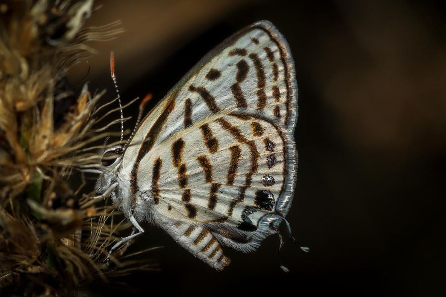
رقم 03 فراشة البييرو Lycaenidae رقم 04 أسد المنّ الأخضر Chrysopidae 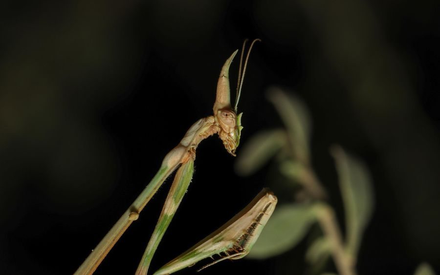
رقم 05 فرس النبي المخروطي Empusidae رقم 06 خادرة فراشة Lepidoptera رقم 07 فراشة صفراء Pieridae رقم 08 نحلة عسل تتغذى Apis 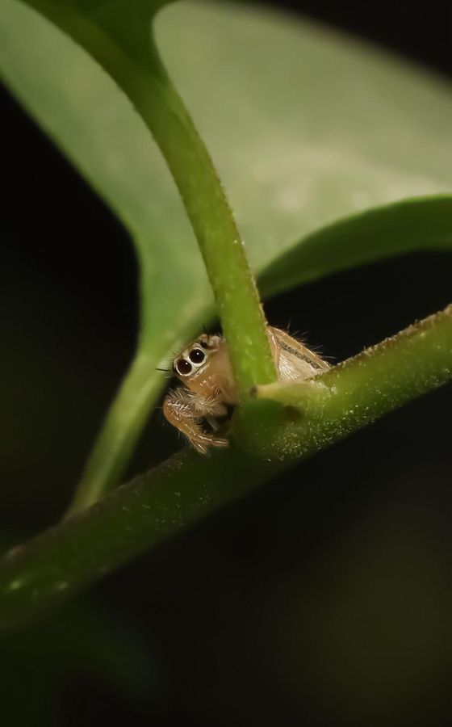
رقم 09 عنكبوت قافز Salticidae 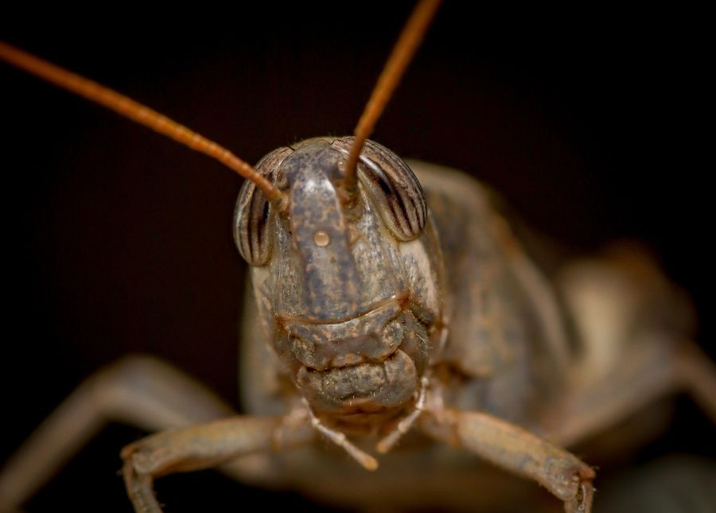
رقم 10 جندب Orthoptera 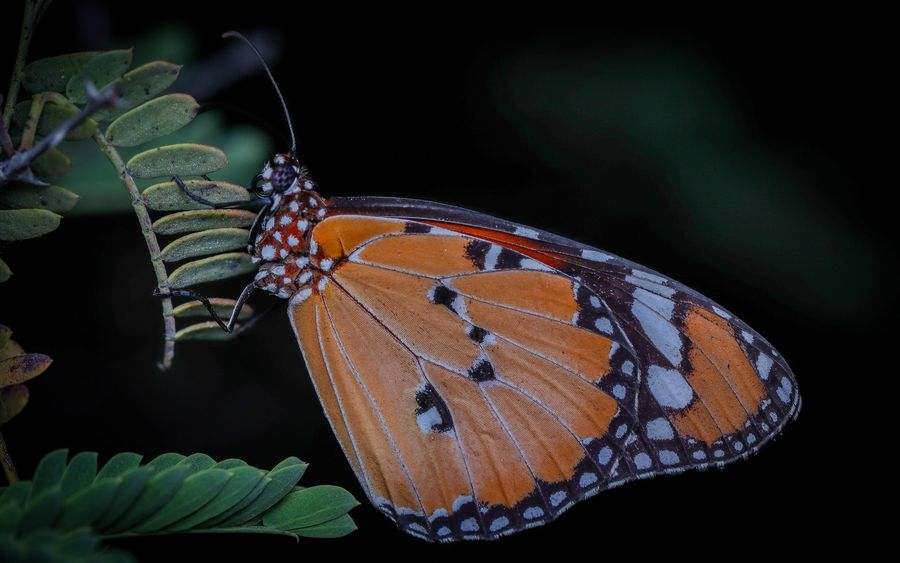
رقم 11 فراشة النمر Danaus chrysippus 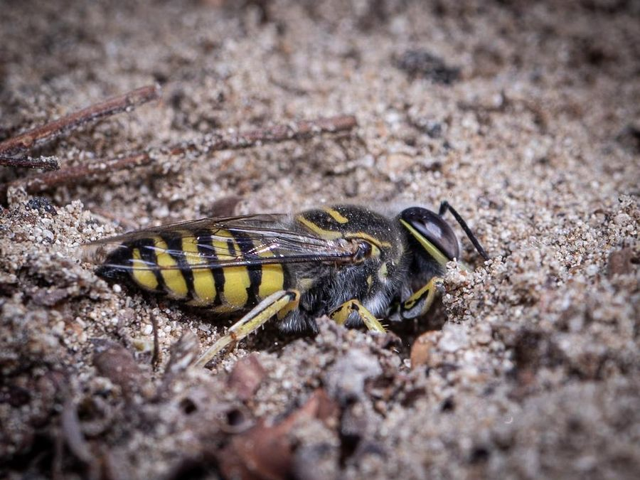
رقم 12 دبور الرمل Hymenoptera 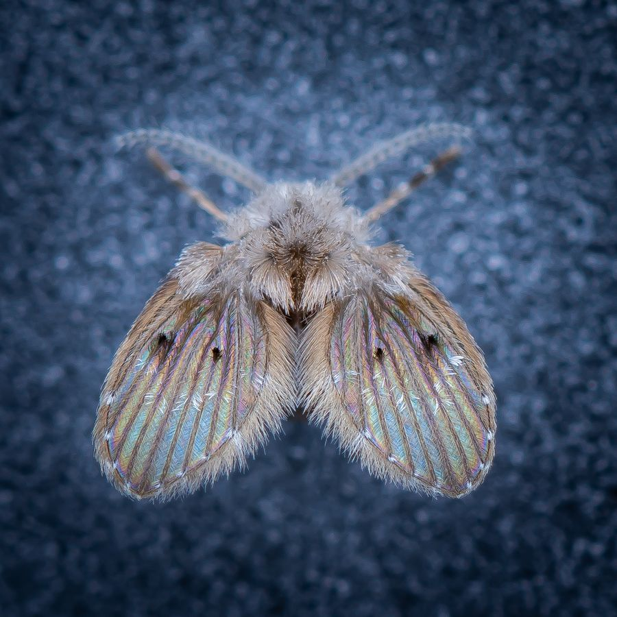
رقم 13 ذبابة العُث Psychodidae 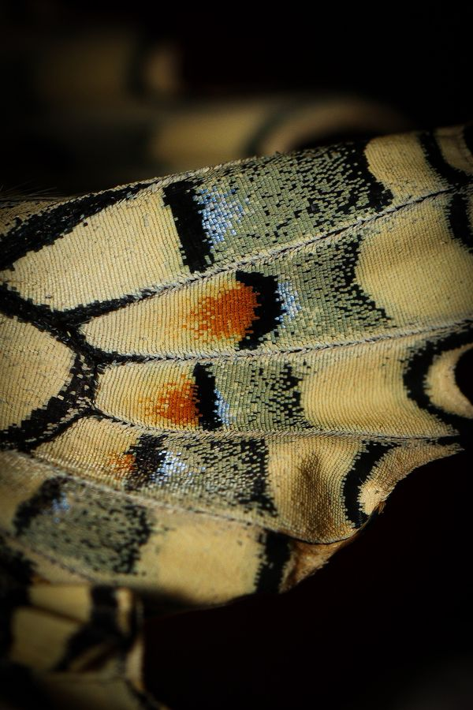
رقم 14 حراشف جناح ذيل السنونو Papilionidae رقم 15 عنكبوت الوشق Oxyopidae 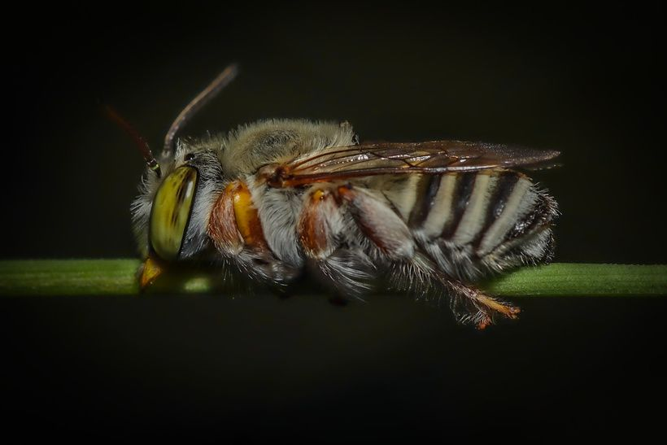
رقم 16 نحلة انفرادية تستريح Apidae 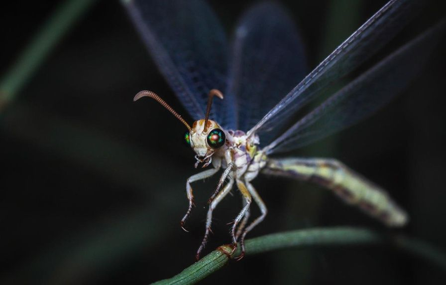
رقم 17 أسد النمل Myrmeleontidae رقم 18 نحلة على القرص Apis رقم 19 حراشف الجناح Lepidoptera 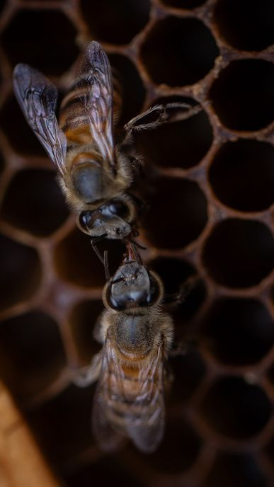
رقم 20 نحل في الخلية Apis هذا المعرض جزء من التوثيق المحلي المستمر الذي تقوم به مريم آل علي للتنوع البيولوجي في دولة الإمارات العربية المتحدة. لشراء مطبوعة، اذكر رقم الصورة في استفسارك. أرسل استفساراً